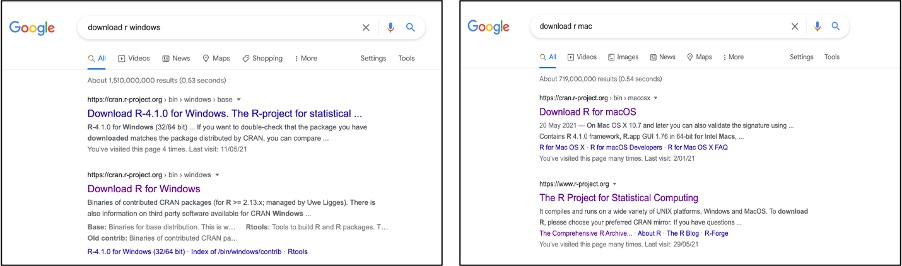
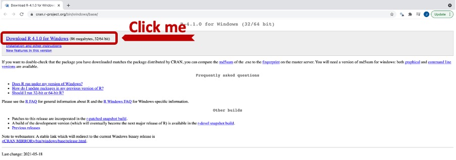
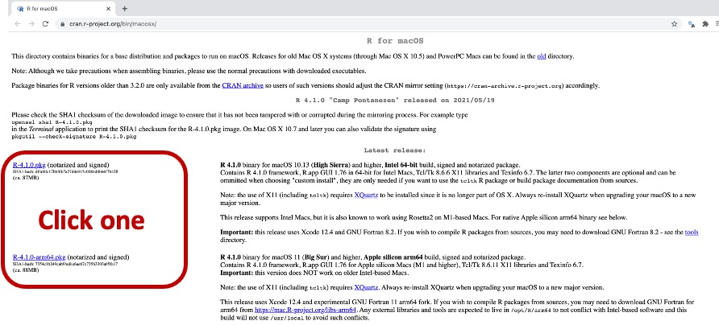
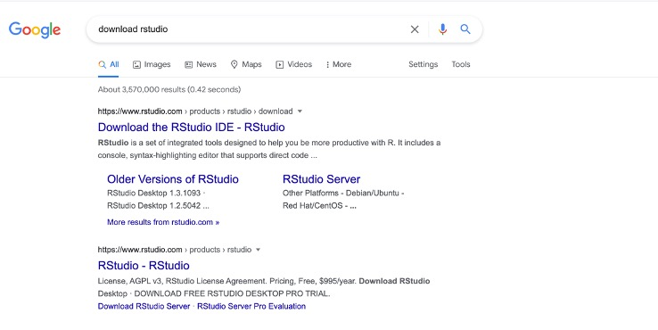
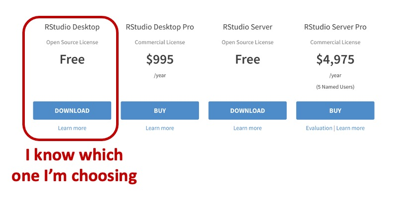
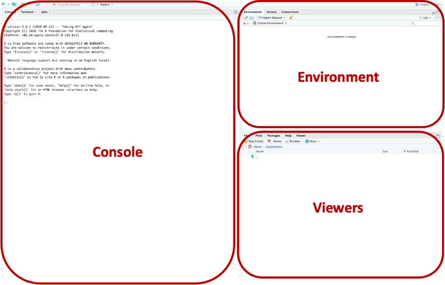
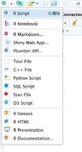
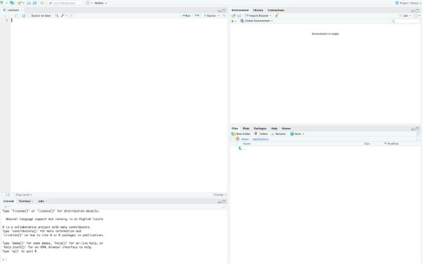

Introduction
Do you find your love of football and curious mind converging to the point where you want to dig a little into the data to confirm if what your eyes are seeing is in fact what’s happening, but you just don’t know how to get started, or where to get data from? Or maybe you have already started doing some analysis in visualisation software, including PowerBI, Tableau, Excel, etc, or know enough about statistics to want to perform some statistical modelling, but you just need to know how to get access to more data, quicker and easier? Then this post will be for you.
This post will hopefully teach you how to use worldfootballR - an R package built to aid in the extraction of world football data from a number of popular websites (with their consent).
The post will demonstrate how to use the package to extract your data programmatically and save it in a suitable file format that your report ingests, saving you the manual steps of extracting data from popular websites listed below.
Additionally, I will also aim to demonstrate the visualisation tools available in R, if you so choose to invest the time into learning R.
A final aim of the post is to highlight what’s possible in R for those new to R programming in the hope that it stokes enough interest to get you started on your R learning journey.
What this post won’t be is an in depth how-to-code-in-R post - there are plenty of online resources, including MOOCs, posts, screencasts, etc to do that. This post will focus on getting you up and running with data in your hands… or on your screens.
What data can I get?
The package as at version 0.3.2 provides access to data from the following data sites:
- FBref.com (a whole host of data to analyse, including results, match stats, season long stats, player and team stats, etc);
- Transfermarkt.com (player market values, team transfer history, player transfer history); and,
- Understat.com (shot locations data for matches played in the major leagues)
These three sites are regularly used by analysts the world over, however the package is constantly evolving and may include data from additional sites in the future.
To my knowledge, only FBref provide the ability to export data to a file - the other two don’t, so you’d need to find some other way to get your data (painfully slow copy and paste), and that’s where worldfootballR come in.
Prerequisites
The only prerequisites to this post are that you have a computer, internet connection and the desire to analyse world football data. This post is designed to take any aspiring analyst with absolutely no R coding experience to being able to extract data programmatically using the worldfootballR R library.
What is R / Why would I use R?
From R’s official site (https://www.r-project.org/about.html);
R is a language and environment for statistical computing and graphics.
You can find out a lot more about R as you get more experienced with the language on the home page, but all you need to know for now is that R will be another tool in your toolkit to perform the analyses you want to do. R is an amazing programming framework that allows you to do a number of things, including data cleaning, performing statistical analysis and modeling and building fully customisable visualisations using the R programming language.
Importantly, anything programmed means it’s repeatable. Set up your code upfront, then simply rerun it to get consistent results.
The world is your oyster if you have the drive to learn.
Installing R and RStudio
This first section will detail the steps required to install R and RStudio, before you can get started with pulling data using worldfootballR.
Getting started
Ok so a few things before we dive right in… this is in layman’s terms (because I myself am a layman). R is the engine, the coding language driving everything you want to do, and RStudio is the pretty graphical user interface (GUI pronounced “gooey”) that gives you additional functionality when writing code in it. I am going to propose installing both R and RStudio in this post, but if you don’t want RStudio (I advise you to go with RStudio), you could still run the code to get the data you need (I will assume here everything is done in RStudio).
Install R
You remember how I said I’m a layman? It’ll extend itself here. We’re going to install R and we’re going to use all of the default options (just keep clicking “accept” or “agree”, or “continue”, and nothing else until R has been successfully installed. You can customise the installation when you’re better versed in R, but for now, just show me the data!
So how to find R to install R you ask? Well, you have to type into Google some really sophisticated stuff… “download r windows” or on Mac OS… yep, you guessed it, “download r mac”.

If you can’t be bothered doing that, here are the links:
- For Windows OS: https://cran.r-project.org/bin/windows/base/
Select “Download R X.X.X for Windows”, with “X.X.X” being for whatever is the most recent version of R:

- For Mac OS: https://cran.r-project.org/bin/macosx/
Depending on what version of Mac OS you’re running will determine which version to install, but generally speaking it’ll only be one of the highlighted options below:

Once you have selected either of the Windows or Mac OS versions, install as you would any software, remembering my one special rule at the start of this section… default options all the way.
Now for RStudio
Once R has been installed, we can now go ahead and install RStudio, remember, the GUI that will allow you to code in and provide additional functionality.
Back to our intricate Google search query… “download rstudio”, and select the first result:

Or for the URL: https://www.rstudio.com/products/rstudio/download/
Once we’ve opened the page, we’re presented with a few pricing options, but if you’re like almost all amateur analysts (let’s be honest, even professional analysts), you’re probably only going to need the free version:

We’re (almost) ready to start coding!
Well, we’re almost ready to start coding, but first we’ll do a bit of a tour of RStudio (again, for those that have forgotten, RStudio is the software where we type and execute our R code).

The console pane is where we will be able to see our code running (or run our code in here if we’re not using the scripts), whether there are any “errors” or “warnings” and printed outputs.
The environment is the sections where we will see the objects that we’ve imported, or created, including data frames (think of something similar to an Excel table).
In the viewers pane, there are a few tabs, including being able to navigate through the file system (‘Files’ tab), any visualisations we’ve created (‘Plots’ tab), the libraries/packages we have loaded on our machines and have available to us “locally” (‘Packages’ tab), a help section, where we can get additional details on what we need to provide the functions to work and a ‘Viewer’ tab to see HTML outputs.
Now we’re ready to start coding
Open up an R script (there are a number of different options to code in, but a .R script is the best place to start.
To open up a script, you can either press control+shift+n on a Windows machine, or command+shift+n on a Mac, or you can select a new script with the drop down in the top-left corner:

Changing the layout as such:

We will start writing code in the top-left quadrant.
Conclusion
Hopefully you’ve made it this far!
We’ve gone through an overview of the worldfootballR package, designed to help you extract football data from popular soccer data websites, we’ve installed R and RStudio, we’ve started pulling data using the worldfootballR, we’ve saved it in either .xlsx or .csv, we’ve seen some brief statistical analysis, AND we’ve also created some visualisations using a mixture of dplyr (to get our data ready) and ggplot.
Hopefully this has stoked your interests enough into the possibilities available to you using R and worldfootballR!
If you have any questions or feedback, feel free to comment, or get in touch on twitter jaseziv.